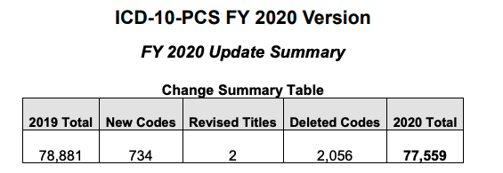

Disclosure
I am employed by IBM
Learning Objectives
- Talk about shifts in coding practices
- Identify shifts from data
- Harden analytics against this drift
History of the ICD-10 Transition
- Necessary modernization üìà or looming disaster üî•?
- Delayed implementation üìÖ & enforcement üëÆüèæ‚Äç‚ôÄÔ∏è
- Education üë©ü誂Äçüè´ and implementation costs üí∞
 Network analysis of ICD-9 to ICD-10 mapping
Network analysis of ICD-9 to ICD-10 mapping
Boyd AD, Li J, Burton MD et al. JAMIA (2013)
Granularity, Laterality, & Specificity
Example: Salmonella Infections
| Header |
Code |
|
Flag |
| A02.2 |
A02.20 |
Unspecified |
unspecified |
|
A02.21 |
Meningitis |
non-novel |
|
A02.22 |
Pneumonia |
non-novel |
|
A02.23 |
Arthritis |
non-novel |
|
A02.24 |
Osteomyelitis |
non-novel |
|
A02.25 |
Pyelonephritis |
novel |
|
A02.29 |
Other infection |
other |
Second-order Coding Effects
 Yes, we observe learning curves since 2015
Yes, we observe learning curves since 2015
| Header |
Description |
Type |
Δ % |
| M25.51 |
Pain in shoulder |
Laterality |
+8.4% |
| M25.55 |
Pain in hip |
Laterality |
+8.9% |
| M25.56 |
Pain in knee |
Laterality |
+7.0% |
| M79.60 |
Pain in limb |
Laterality |
+9.7% |
| Header |
Description |
Type |
Δ % |
| I25 |
CHD |
Granularity |
+5.8% |
| Z12.3 |
Mammograms |
Granularity |
+9.9% |
| R09.8 |
Resp. Symptoms |
Granularity |
+7.2% |
Need to correct for seasonal allergies
Coding Volume

| Header |
Description |
Type |
Δ % |
| M17.1 |
Osteoarthritis |
Laterality |
-3.7% |
| D50.1 |
Iron deficiency |
Other |
— |
Uncovered Clinical Content

| Header |
Description |
Type |
Δ % |
| E11.6 |
Type 2 DM |
Granularity |
-10.8% |
| Z79.81 |
Drug Use |
Granularity |
-2.8% |
Implications & Recommendations
1. When applicable, group related codes together — and validate your groups.
Ning, W., Yu, M. & Zhang, R. (2016)
3. When using risk-adjusted measures, consider validating & adjusting for coding volume.
Summary
- Codeset transitions produce learning curves
- Use related code groups to identify trends
- Follow best practices to avoid model drift
jborsi@us.ibm.com, @jpborsi
Dr. Amanda Yoho, @mandaYoho
Srikanth Sivashankaran